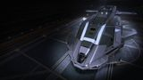

Hardpoints
1L 4M 2S (seven mounts)
Seven hardpoints take two small Guardian Gauss, a row of medium AX multi-cannons and shard cannons, and a class-7 distributor feeds them all without throttling. Three military slots stack Guardian Module Reinforcement — the hardening that shrugs off Thargoid lightning — over a battleship-grade hull. The catch is grace: the Gunship is slow and turns like a barge, so it struggles to track an Interceptor with fixed Gauss and cannot dodge the way a Chieftain does. It out-tanks the medium field but kills and survives the hard way.

This ship's 1–100 suitability rating reflects its fully-engineered fit for this role, scored against every ship in the role. See how ships are rated.
The Federal Gunship comes to anti-Xeno work the way it comes to everything: by being a wall. Seven hardpoints (one large, four medium, two small) carry more individual AX mounts than any other popular medium — two small Guardian Gauss cannons, medium AX multi-cannons and Guardian shard cannons across the rest — and the oversized class-7 power distributor feeds those power-hungry weapons without ever browning out. Three military slots and a 630 armour base let it pack the Guardian Module Reinforcement that turns Thargoid lightning into a nuisance instead of a death sentence.
What it lacks is mobility. The Gunship is slow and turns badly, and AX rewards the opposite — tracking an Interceptor's exposed hearts with fixed Gauss, then dodging the lightning and missile swarm. The Gunship anchors instead: it plants in front of the Thargoid, soaks the punishment behind hardened modules, and grinds it down with sustained fire. It is a tank, not a duellist. For pilots who would rather out-last an Interceptor than out-fly it, it's a tough, forgiving AX platform — just never a graceful one.
Stand-and-grind anti-Xeno work: AX conflict zones, holding ground against Scouts and Interceptors, and Maelstrom-edge operations where Guardian-hardened modules and a deep hull matter more than agility.
Four things make the Gunship a credible Xeno hunter:
It is slow and turns badly. Fixed Gauss — the AX meta weapon — needs to be tracked onto moving hearts, and the Gunship struggles to keep an Interceptor in its sights or dodge the swarm. Its mounts are mostly medium and small, so its per-mount firepower trails the large-hardpoint kraits. It survives by hardening and out-lasting, not by evasion or burst — a tank's path through an AX fight, not a striker's.
Seven mounts and three Guardian-reinforced military slots over a 630-armour hull make it the medium AX tank, but 171 m/s and barge-like handling cap it at 82.
The 82/100 headline is a verdict against the anti-Xeno role's priority-ordered factors. Each factor carries a weight (its share of 100); this hull earns part of each based on how it performs against the whole field. The points sum to the rating.
| Role factor | Score | Why this score |
|---|---|---|
| Hardpoints for Gauss | 23/25 | Seven mounts (1L 4M 2S) carry the widest AX mix on a medium, but only the two small slots take Guardian Gauss outright; the large takes an Enhanced AX multi-cannon, so per-Gauss density trails the large-hardpoint kraits. |
| Heat capacity & management | 16/20 | The oversized class-7 distributor sustains Gauss and shard weapon-capacitor drain without browning out, and four utility mounts fit heat-sink launchers, but the bulky hull is no cold runner and heat stays a management chore. |
| Hull tank & reinforcement room | 20/20 | 630 battleship-grade base armour, three class-4 military slots and deep 6/6/5 optionals stack Guardian Module and Hull Reinforcement to push effective armour past 3,800 — role-leading hardening among mediums. |
| Agility | 13/25 | 171/282 m/s and barge-like rotation mean it cannot track an Interceptor's hearts with fixed Gauss or dodge the lightning swarm; even Dirty Drives only claw back marginal agility — the clear limiter. |
| Caustic handling & support slots | 10/10 | Four utility mounts plus deep optionals (6/6/5/2/2/1) host caustic-sink launcher, decontamination limpet, AFMU, and even a 6D fighter hangar for caustic scrubbing and decoy support — generous support room. |
| Weighted total | 82/100 | Matches the headline suitability rating for this ship in this role. |
Weights are an editorial decomposition of the role's stated priority order — not an in-game formula. Bar length shows how fully each factor is earned; the longest factors carried the score, the shortest are where it gave points away. See how ships are rated.
Every table rates ships for AX specifically, split by landing-pad class. The Hardpoints column is the hardpoint loadout — the mount count for a Gauss suite; the rating is the same 1–100 suitability verdict used across the site.
| Ship | Class | Hardpoints | Pros & cons | Rating |
|---|---|---|---|---|
| Alliance Chieftain | Medium | 2L 1M 3S | Higher-rated; agility; heatGauss mounts | 90 |
| Krait Mk II | Medium | 3L 2M | Higher-rated; Gauss mounts; agilityHull tank | 89 |
| Alliance Challenger | Medium | 1L 3M 3S | Higher-rated; hull tank; caustic kitAgility | 88 |
| Corsair | Medium | 3L 3M | Higher-rated; Gauss mounts; agilityHull tank | 84 |
| Krait Phantom | Medium | 2L 2M | Higher-rated; agility; heatHull tank | 84 |
| Python Mk II | Medium | 4L 2M | Higher-rated; Gauss mounts; caustic kitHull tank | 84 |
| Federal Gunship this | Medium | 1L 4M 2S | — this hull (baseline) | 82 |
| Python | Medium | 3L 2M | Hull tank; caustic kitLower-rated; agility | 80 |
| Alliance Crusader | Medium | 1L 2M 3S | Hull tank; heatLower-rated; agility | 79 |
| Federal Assault Ship | Medium | 2L 2M | Agility; hull tankLower-rated; Gauss mounts | 77 |
| Federal Dropship | Medium | 1L 4M | Caustic kit; Gauss mountsLower-rated; agility | 73 |
| Mamba | Medium | 1H 2L 2S | Agility; heatLower-rated; hull tank | 70 |
| Fer-de-Lance | Medium | 1H 4M | Agility; Gauss mountsLower-rated; hull tank | 68 |
13 medium-pad AX hulls carry a rating, led by Alliance Chieftain (90). Every same-pad rival lands where this one does — the direct field to shop.
| Ship | Class | Hardpoints | Pros & cons | Rating |
|---|---|---|---|---|
| Imperial Cutter | Large | 1H 2L 4M | Higher-rated; Gauss mounts; heatAgility | 90 |
| Anaconda | Large | 1H 3L 2M 2S | Higher-rated; Gauss mounts; hull tankAgility | 88 |
| Federal Corvette | Large | 2H 1L 2M 2S | Higher-rated; hull tank; heatAgility | 86 |
| Type-10 Defender | Large | 4L 3M 2S | Higher-rated; hull tank; caustic kitAgility | 86 |
The large-pad AX field (4 rated), led by Imperial Cutter (90) — bigger pads and bankrolls. They out-muscle this hull on the numbers, but sit a pad class away.
| Ship | Class | Hardpoints | Pros & cons | Rating |
|---|---|---|---|---|
| Kestrel Mk II | Small | 3L 2S | Agility; Gauss mountsLower-rated; caustic kit | 60 |
| Cobra Mk V | Small | 3M 2S | Agility; Gauss mountsLower-rated; caustic kit | 50 |
| Vulture | Small | 2L | Hull tank; agilityLower-rated; Gauss mounts | 44 |
The small-pad AX field (3 rated), led by Kestrel Mk II (60) — cheaper hulls and tighter pads. They undercut this hull on the numbers, but sit a pad class away.
At ~36M Cr the hull is mid-priced, but it carries a Federal rank gate — Chief Petty Officer — that the kraits and Alliance hulls don't. A full AX fit with Guardian/AX weapons, Guardian module and hull reinforcement and a shield brings the all-in figure to around 110M Cr, much of it locked behind Guardian-tech unlocks rather than credits.
The low rebuy — about 4.1M Cr engineered — is a quiet advantage: AX fights end in death often, and the Gunship is cheap to re-buy compared with the large hulls. It's a forgiving ship to learn the discipline in, provided you accept its weight.
The credits are modest; the Guardian grind is the real cost. Budget for Guardian weapon and module-reinforcement blueprints before you budget for the hull — the rebuy itself is among the lightest in the AX field.
A hardened AX tank fit: a wide AX weapon mix fed by the class-7 distributor, Guardian module reinforcement in the three military slots, and caustic/heat kit in the utilities. Initial is buy-only (AX & Guardian weapons need unlocks, so the hull starts bare); A-Rated adds the Guardian/AX kit; Engineered hardens mobility, heat and shield.
| Slot | Initial · buy-only | A-Rated · no eng | Engineered | Notes |
|---|---|---|---|---|
| Hardpoints | ||||
| Large 1 | — | 3C Enhanced AX Multi-Cannon (Gimballed) | (No blueprint available) | Largest mount takes an Enhanced AX Multi-Cannon; gimballed so the clumsy hull can still land rounds on a weaving Interceptor. |
| Medium 1 | — | 2E Enhanced AX Multi-Cannon (Gimballed) | (No blueprint available) | Enhanced AX Multi-Cannon, gimballed — sustained anti-Xeno DPS that needs no precise tracking. |
| Medium 2 | — | 2E Enhanced AX Multi-Cannon (Gimballed) | (No blueprint available) | Second gimballed Enhanced AX Multi-Cannon doubles the medium AX battery. |
| Medium 3 | — | 2A Guardian Shard Cannon (Fixed) | (No blueprint available) | Guardian Shard Cannon — close-range burst against exposed hearts; fixed, fired when anchored in close. |
| Medium 4 | — | 2A Guardian Shard Cannon (Fixed) | (No blueprint available) | Second Guardian Shard Cannon stacks the heart-burst damage. |
| Small 1 | — | 1D Guardian Gauss Cannon (Fixed) | (No blueprint available) | Guardian Gauss Cannon — the AX meta weapon; fixed-only, charged onto an exposed heart. |
| Small 2 | — | 1D Guardian Gauss Cannon (Fixed) | (No blueprint available) | Second Guardian Gauss for paired heart strikes; both small mounts go to Gauss. |
| Utility Mounts | ||||
| Utility 1 | — | 0C Xeno Scanner | (No blueprint available) | Advanced Xeno Scanner reads Thargoid type and heart count; scanners carry no blueprint. |
| Utility 2 | — | 0I Caustic Sink Launcher | G1 Ammo Capacity (no experimental effect) | Optional / low-priority — Ammo Capacity adds caustic-sink charges. Clears caustic damage in Thargoid fights. |
| Utility 3 | — | 0I Heat Sink Launcher | G1 Ammo Capacity (no experimental effect) | Optional / low-priority — Ammo Capacity adds heat-sink charges. Dumps heat for silent running and Thermal-Vent resets. |
| Utility 4 | — | 0A Shield Booster | G5 Thermal Resistant + Super Capacitors | Shield Booster; the Thermal Resistant blueprint hardens the buffer against Thargoid thermal fire. |
| Core Internals | ||||
| Bulkheads | Lightweight Alloy | Military Grade Composite | G5 Heavy Duty + Deep Plating | |
| Power Plant | 6E Power Plant | 6A Power Plant | G5 Overcharged + Thermal Spread | Powers the wall of guns and SLF; Overcharged adds headroom, Thermal Spread bleeds the extra heat. |
| Thrusters | 6E Thrusters | 6A Thrusters | G5 Dirty Drive Tuning + Drag Drives | A-rated + Dirty Drives claws back what little agility the heavy hull allows. |
| Frame Shift Drive | 5E Frame Shift Drive | 5A Frame Shift Drive | G5 Increased Range + Mass Manager | A-rated with Increased Range to reach distant Maelstroms; Mass Manager offsets the heavy fit. |
| Life Support | 5E Life Support | 5D Life Support | G5 Lightweight (no experimental effect) | D-rate to save mass; Lightweight trims more — life support has no experimental effect. |
| Power Distributor | 7E Power Distributor | 7A Power Distributor | G5 Charge Enhanced + Super Conduits | A-rate the class-7 unit FIRST — Gauss and shard drain the weapon capacitor brutally; Charge Enhanced + Super Conduits keep it fed. |
| Sensors | 5E Sensors | 5D Sensors | G5 Lightweight (no experimental effect) | Drop to D and go Lightweight; AX needs no sensor range, so save the mass. |
| Fuel Tank | 4C Fuel Tank | 4C Fuel Tank | (No blueprint available) | Stock C tank; fuel capacity is fixed and cannot be engineered. |
| Military Slots | ||||
| Military 1 | — | 4D Guardian Module Reinforcement | (No blueprint available) | Guardian Module Reinforcement — the signature anti-lightning hardening; Guardian kit is not engineerable. |
| Military 2 | — | 4D Guardian Module Reinforcement | (No blueprint available) | Second Guardian Module Reinforcement; stacking spreads more penetrating lightning across the modules. |
| Military 3 | — | 4D Guardian Hull Reinforcement | (No blueprint available) | Guardian Hull Reinforcement adds caustic-resistant effective armour; not engineerable. |
| Optional Internals | ||||
| Size 6 | — | 6C Bi-Weave Shield Generator | G5 Thermal Resistant + Fast Charge | Bi-Weave regenerates fast under fire; Thermal Resistant + Fast Charge tune it for Thargoid thermal damage. |
| Size 6 | — | 6D Fighter Hangar | (No blueprint available) | SLF bay adds a remote gun and a decoy to split Thargoid attention; hangars are not engineerable. |
| Size 5 | — | 5D Guardian Hull Reinforcement | (No blueprint available) | Largest Guardian Hull Reinforcement for caustic-resistant armour; not engineerable. |
| Size 2 | — | 1E Decontamination Limpet Controller | (No blueprint available) | Decontamination Limpet Controller scrubs caustic damage between heat-sink purges; limpet controllers carry no blueprint. |
| Size 2 | — | 2A AFMU | G5 Shielded (no experimental effect) | Optional / low-priority — Shielded hardens the AFMU. Repairs modules between fights. |
| Size 1 | — | 1E Cargo Rack | (No blueprint available) | Optional — adds cargo space; worth it for dedicated haulers. Cargo racks aren't engineerable. |
| Open in planner / Export | ||||
| Open in Coriolis | open | open | open | One-click open at coriolis.io. |
| Open in EDSY | open | open | open | One-click open at edsy.org. |
| Copy SLEF | Copies the raw Ship Loadout Export Format for that state. | |||
Gauss and shard cannons drain the weapon capacitor brutally — A-rate the class-7 distributor before anything else or the guns stutter. Then fill the military slots with Guardian Module Reinforcement: it is the difference between losing a thruster to Thargoid lightning and shrugging it off. Manage heat hard.
Earn Chief Petty Officer, buy the hull, and unlock Guardian and AX weapons at the relevant sites — AX weapons cannot be bought outright.
Buy-only, the hull starts on stock Lightweight Alloy bulkheads over its default core internals — 6E power plant and thrusters, 5E FSD, life support and sensors, the 7E power distributor and a 4C fuel tank. Base armour is just 630.
Every hardpoint, utility, military slot and optional bay is left empty at this stage. The Enhanced AX multi-cannons, Guardian shard and Gauss cannons, Guardian module and hull reinforcement, the bi-weave shield and the caustic/heat kit all wait on Guardian/AX unlocks. The Military Grade Composite bulkheads are a straight cash purchase rather than an unlock — but they, like the A-rating, come in the upgrade pass, not off the shelf here.
AX-fitting priority:
The Gunship can't dodge, so it survives by hardening — prioritise the distributor that keeps the guns firing, the Military Grade Composite bulkheads under the buffer, and the Guardian module reinforcement that keeps the thrusters and weapons alive under Thargoid lightning.
AX engineering hardens mobility, heat and survival; AX/Guardian weapons have limited engineering. Felicity Farseer (maxed) carries the FSD; pin blueprints for remote G1→G5 application.
| Module | Blueprint | Experimental | Engineer |
|---|---|---|---|
| Power Plant (6) | Overcharged (G5) | Thermal Spread | Hera Tani |
| Thrusters (6) | Dirty Drive Tuning (G5) | Drag Drives | Professor Palin / Mel Brandon |
| Frame Shift Drive (5) | Increased Range (G5) | Mass Manager | Felicity Farseer |
| Power Distributor (7) | Charge Enhanced (G5) | Super Conduits | The Dweller |
| Bi-Weave Shield (6) | Thermal Resistant (G5) | Fast Charge | Lei Cheung |
| Shield Booster | Thermal Resistant (G5) | Super Capacitors | Didi Vatermann |
| AX / Guardian weapons & Guardian reinforcement | Not engineerable (unlock-only Guardian/AX tech) (—) | — | — |
| Bulkheads | Heavy Duty (G5) | Deep Plating | Selene Jean |
Moderate ship engineering plus heavy Guardian-tech unlocks for weapons and reinforcement — the Guardian grind is the real cost. Ship blueprints are standard. Ask for exact per-blueprint or unlock counts if needed.
Approximate progression across the three states (figures are representative, not exact rolls):
| Stat | Initial | A-rated | Engineered |
|---|---|---|---|
| AX firepower | none (bare hull) | high | high (widest mix) |
| Bulkheads | Lightweight Alloy | Military Grade | Military Grade + HD / Deep Plating |
| Module hardening | none | military + optionals | strong (Guardian MRP) |
| Armour (eff.) | 630 | ~2,100 | ~3,800+ |
| Agility (dodge) | poor | poor | poor (by design) |
| Has a decoy fighter | no | yes | yes |
The bulkhead is the single biggest survival jump: Lightweight Alloy's 630 base armour climbs to ~2,100 effective once Military Grade Composite goes on alongside the A-rated Guardian hull reinforcement. Engineered and Guardian-armed, the Gunship is a hardened AX anchor — a Heavy-Duty roll on the Military Grade Composite drives effective armour into the thousands, three Guardian-reinforced military slots resist lightning, and seven mounts pour out sustained AX fire. It never becomes nimble — that's the deal — so it kills by grinding from a hardened position rather than by dodging and bursting.
Wherever Thargoids are fought — AXCZ, Scout swarms, Interceptor hunts and Maelstrom-edge ops. The Gunship is the medium-pad tank that holds the line rather than the spearhead that breaks it.
The Federal Gunship is the medium-pad AX tank: seven mounts of mixed Guardian and AX weapons, a class-7 distributor to feed them, and three military slots of Guardian reinforcement over a battleship hull. It is slow and graceless, so it can't track and dodge the way the top mediums do — but for a pilot who'd rather out-last an Interceptor than out-fly it, it's a tough, cheap-to-rebuy anti-Xeno workhorse.
Figures on this page are verified against the sources below.